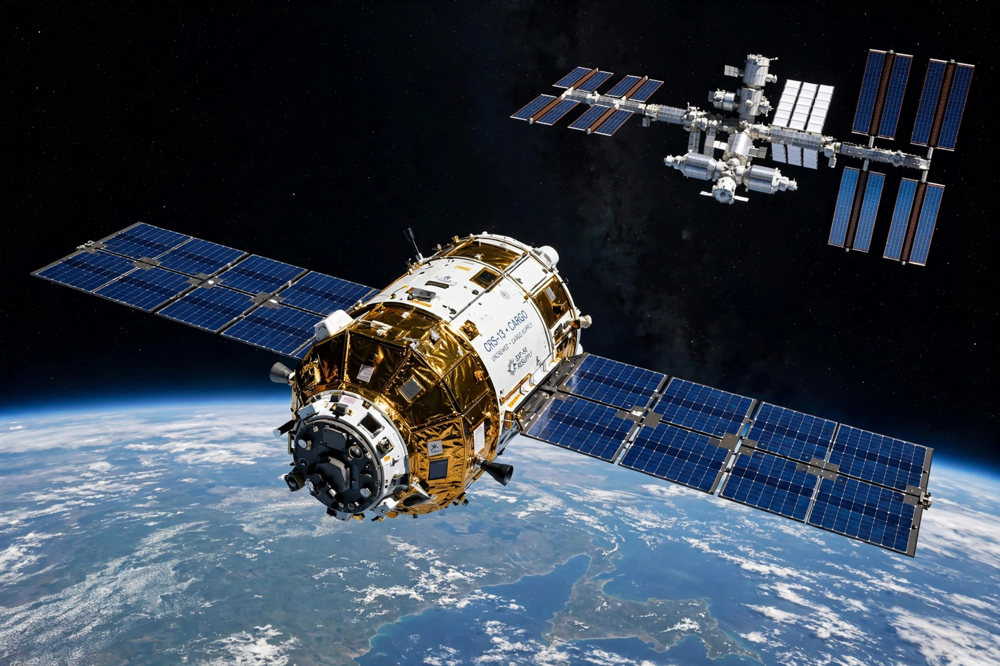

Progress (spacecraft)
From Wikipedia, the free encyclopedia
| Progress (spacecraft) | |
|---|---|
| Country | USSR / Russia |
| First flight | 20 January 1978 |
| Role | Uncrewed cargo resupply |
| Launched on | Soyuz rockets |

Progress approaches the ISS.Progress is a Russian (formerly Soviet) uncrewed cargo spacecraft used to resupply space stations since 1978. Derived from the Soyuz design — the same three-module layout, minus life support and any ability to return a crew — it delivers food, water, air, fuel and equipment, and uses its engines to boost the station's orbit before burning up on reentry loaded with rubbish.
Progress first flew to Salyut 6, and versions of it have served Salyut 7, Mir and the International Space Station; more than 170 have been launched. At the ISS it is joined by a small fleet of freighters — American Cygnus and Dragon, and formerly Japan's HTV and Europe's ATV — but Progress alone refuels the Russian segment and provides much of the station's reboost.
Notable incidents
A Progress test collision in 1997 damaged Mir's Spektr module during the Shuttle–Mir program. In 2015 a Progress was lost after a separation anomaly from its Soyuz rocket sent it tumbling — a reminder that even this routine workhorse can fail, briefly straining ISS logistics. Automated Progress flights can dock in as little as two orbits (about three hours) after launch on the fast-rendezvous profile pioneered by the type.
See also
Soyuz (spacecraft) · International Space Station · Mir · Shuttle–Mir program